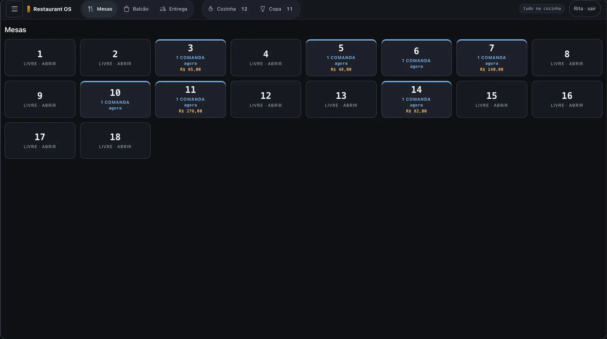
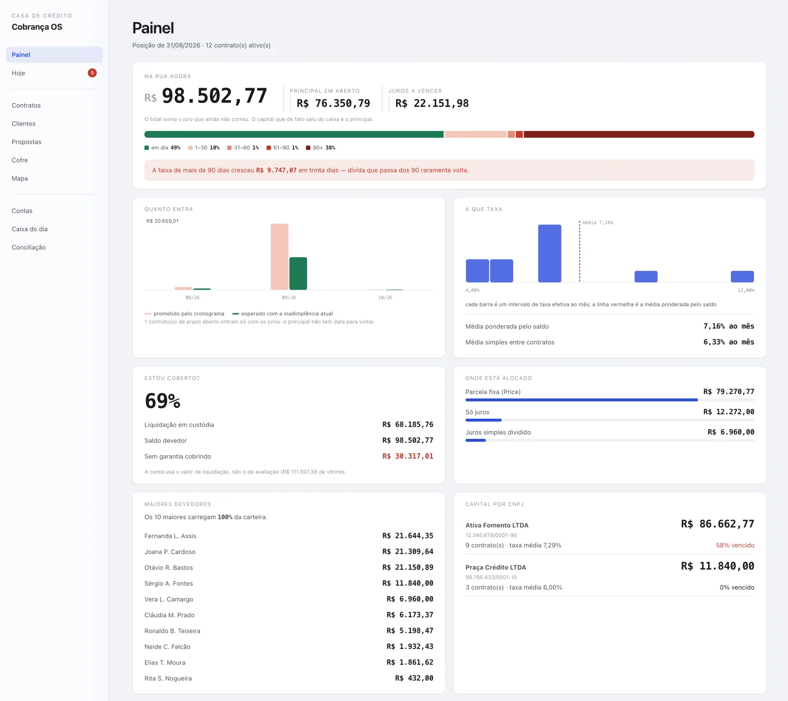
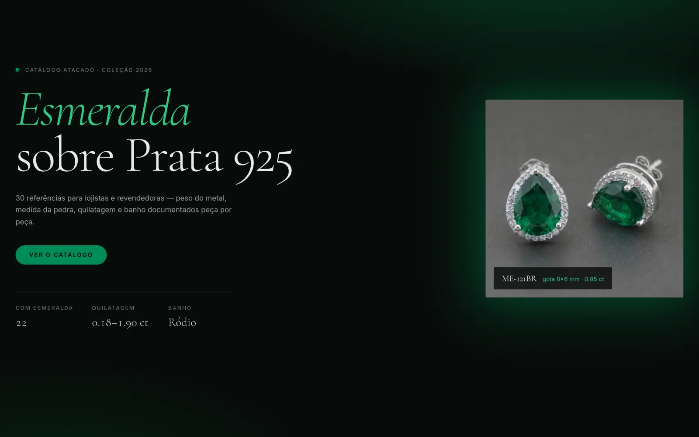
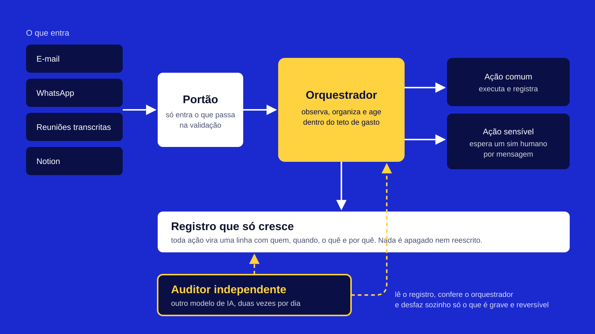

Você fala com quem constrói
Sem atendente e sem repasse. Quem ouve o seu problema é quem desenha e entrega o sistema.
Sistemas sob medida e automação com IA que assumem o trabalho repetitivo, organizam a operação e liberam seu tempo para o que realmente importa: lucro e estratégia.
De uma empresa suíça de certificação de joias a uma rede de clínicas, cada sistema aqui foi construído do banco de dados ao aplicativo no celular.
Cada um nasceu de uma operação de verdade e foi testado antes de chegar na mão de quem usa. Clique para ver as telas e como foi construído.
Uma empresa suíça me contratou para construir o sistema inteiro de certificação e garantia de joias
Ver o sistema
Do agendamento pelo celular ao prontuário assinado, a clínica inteira numa plataforma
Ver o sistema
A distribuidora acha o cliente no Google Maps, a IA qualifica e o vendedor fecha pelo WhatsApp
Ver o sistema
O bar continua vendendo com a internet caída
Ver o sistema
A live termina com pedido, estoque, cobrança e etiqueta prontos
Ver o sistema
Quanto está na rua, quanto apodreceu e se a garantia cobre
Ver o sistema
A lojista escolhe a peça de fábrica e vê quanto paga e quando
Ver o sistema
Onde olhar primeiro nos leilões da Receita Federal
Ver o sistema
Uma IA que trabalha sozinha e deixa rastro de tudo que faz
Ver o sistemaPequenas automações geram grandes retornos. Calcule o potencial de economia da sua operação.
Expertise em tecnologias de ponta para automação
Agentes de IA analisam vastas quantidades de dados em segundos, oferecendo insights precisos que humanos levariam semanas para compilar.
Integração perfeita entre as ferramentas que você já usa (CRMs, ERPs, Slack, WhatsApp), criando um ecossistema autossuficiente.
Cresça suas vendas e atendimento de forma exponencial sem precisar aumentar proporcionalmente sua equipe e custos fixos.
Mapeamos cada clique e tarefa repetitiva da sua operação para encontrar os vazamentos de produtividade.
Desenhamos e treinamos seus Agentes de IA customizados com o tom de voz e dados da sua empresa.
Implementação live, monitoramento de performance e escala do que está gerando mais lucro.
Sem atendente e sem repasse. Quem ouve o seu problema é quem desenha e entrega o sistema.
Comanda por pessoa no bar. Garantia calculada pelo valor de liquidação, não pelo de vitrine. Laudo que só sai se for conclusivo. A regra do seu negócio vira regra do sistema.
Cada sistema carrega centenas ou milhares de testes automáticos. Eles rodam sozinhos a cada mudança, antes de qualquer coisa chegar em você.
Acesso por papel, rastro de quem fez o quê, cópia de segurança cifrada. No prontuário, isso foi desenhado sob a LGPD antes da primeira tela existir.
Meu processo é estratégico, focado em ROI e implementação cirúrgica. Sem promessas vazias, apenas tecnologia aplicada a resultados de negócios.
Desenho, construo e coloco no ar sistemas para negócios que não cabem em software de prateleira. Começo pela sua operação, não pela tecnologia: como o pedido entra, onde o dinheiro some, o que hoje mora em planilha e caderno.
Se o seu negócio tem uma regra que nenhum sistema pronto respeita, é por aí que a conversa começa.
Marca completa da D'Boscolli, confeitaria artesanal: onze versões do logotipo, manual e etiquetas de produto saem de scripts. Mudou a cor ou o lote, tudo é regerado em segundos, sem redesenhar nada à mão.
Vinte e duas semanas desenhadas a partir de pesquisa sobre como adulto aprende a programar: revisão espaçada antes de conteúdo novo, exame feito por quem não deu a aula, e o código que já está em produção como bancada de leitura.
A janela de oportunidade para se tornar uma empresa 'AI-First' está se fechando. Vamos desenhar o futuro digital da sua operação hoje.
Falar com Victor no WhatsAppResposta em até 2 horas. Diagnóstico inicial gratuito.